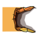

Modules & skills
17 modules, 4 skills, 8 upgrades liés. Vérifie aussi Family Home, vendeur scarabées et récompense des courses.
Module manquant →Objets et progression
La carte interactive donne les positions exactes. Cette page regroupe les compteurs, priorités et pièges.
17 modules, 4 skills, 8 upgrades liés. Vérifie aussi Family Home, vendeur scarabées et récompense des courses.
Module manquant →28 cœurs et 8 upgrades énergie. Certains objets demandent des retours après nouveaux pouvoirs.
Cocher →8 race spirits. La course #2 est liée à la tour aux 3 slimes. Récupère la récompense finale après les 8.
Course manquante →18 scarabées. Pense aux murs cachés, bâtiments optionnels, souterrains et au vendeur final.
Scarabée manquant →8 fragments, 5 tablettes, 13 clés normales, 3 boss keys et 3 clés uniques.
Données →
Family Home, Wounded Heart, barde, tortue, arbre, arènes, bonus dungeons et vraie fin.
Diagnostiquer →Détails utiles
Courses
Ordre conseillé
Zones à risque
Tour aux 3 slimes, accès souterrain et piste à l’est. C’est la course la plus souvent manquée.
DétailsPas un simple marqueur de carte. Reviens après avoir sauvé la famille puis valide l’interaction finale.
VérifierChapelle sud-ouest, autel suspect et passage caché. Très souvent confondu avec une zone déjà finie.
VérifierVendeur scarabées, récompense finale des courses et quelques validations de PNJ ne sont pas aussi visibles qu’un pickup.
Voir les sourcesCarte interactive